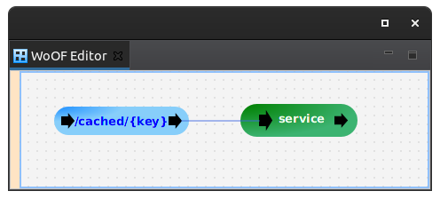

This tutorial demonstrates using Cache to provide caching of fairly constant data. In other words, cached data that may be refreshed by occasional reloading from source (e.g. reference data).
It is a simple application to retrieve data from two caches. As such, the configuration for this tutorial is the following:
The following is the servicing logic to retrieve the data from the caches:
public void service(@HttpPathParameter("key") String key, ObjectResponse<Message> response,
@Hello Cache<String, Message> helloCache, @World Cache<String, Message> worldCache) {
Message helloText = helloCache.get(key);
Message worldText = worldCache.get(key);
response.send(new Message(helloText.getText() + " " + worldText.getText()));
}
Notice that there are two Cache instance injected. The instances are differentiated by the qualifier annotation.
The @Hello Cache is configured as follows:
<managed-object source="net.officefloor.cache.constant.ConstantCacheManagedObjectSource" qualifier="net.officefloor.tutorial.constantcachehttpserver.Hello" type="net.officefloor.cache.Cache"> <property name="qualifier" value="net.officefloor.tutorial.constantcachehttpserver.Hello" /> </managed-object> <managed-object class="net.officefloor.tutorial.constantcachehttpserver.StaticConstantCacheDataRetriever" qualifier="net.officefloor.tutorial.constantcachehttpserver.Hello" />
The ConstantCacheManagedObjectSource provides the Cache. The configured property identifies the qualifier for the qualified ConstantCacheDataRetriever dependency.
The ConstantCacheDataRetriever retrieves the data for caching. The configured implementation uses hard coding and is as follows:
public class StaticConstantCacheDataRetriever implements ConstantCacheDataRetriever<String, Message> {
@Override
public Map<String, Message> getData() throws Exception {
Map<String, Message> data = new HashMap<>();
data.put("1", new Message("Hello"));
data.put("2", new Message("Hi"));
return data;
}
}
The ConstantCacheDataRetriever may inject dependencies to retrieve data from various sources.
The @World Cache retrieves data from a database. It is configured as follows:
<managed-object source="net.officefloor.cache.constant.ConstantCacheManagedObjectSource" qualifier="net.officefloor.tutorial.constantcachehttpserver.World" type="net.officefloor.cache.Cache"> <property name="qualifier" value="net.officefloor.tutorial.constantcachehttpserver.World" /> <property name="poll.interval" value="300000" /> </managed-object> <managed-object class="net.officefloor.tutorial.constantcachehttpserver.DatabaseConstantCacheDataRetriever" qualifier="net.officefloor.tutorial.constantcachehttpserver.World" /> <managed-object source="net.officefloor.jdbc.DataSourceManagedObjectSource"> <property-file path="datasource.properties" /> </managed-object>
Note that the poll interval can be configured to indicate frequency in milliseconds to refresh the data.
The ConstantCacheDataRetriever implementation is as follows:
public class DatabaseConstantCacheDataRetriever implements ConstantCacheDataRetriever<String, Message> {
private @Dependency DataSource dataSource;
@Override
public Map<String, Message> getData() throws Exception {
try (Connection connection = this.dataSource.getConnection()) {
ResultSet result = connection.prepareStatement("SELECT KEY, MESSAGE FROM REFERENCE_DATA").executeQuery();
Map<String, Message> data = new HashMap<>();
while (result.next()) {
data.put(result.getString("KEY"), new Message(result.getString("MESSAGE")));
}
return data;
}
}
}
To have the ConstantCacheManagedObjectSource available, add the following:
<dependency> <groupId>net.officefloor.cache</groupId> <artifactId>officecache_constant</artifactId> </dependency>
The following demonstrates retrieving data from the Cache instances:
@RegisterExtension
public final MockWoofServerExtension server = new MockWoofServerExtension();
@Test
public void helloWorld() {
MockWoofResponse response = this.server.send(MockWoofServer.mockRequest("/cached/1"));
response.assertJson(200, new Message("Hello World"));
}
@Test
public void hiThere() {
MockWoofResponse response = this.server.send(MockWoofServer.mockRequest("/cached/2"));
response.assertJson(200, new Message("Hi there"));
}
The next tutorial covers login via Google sign-in.